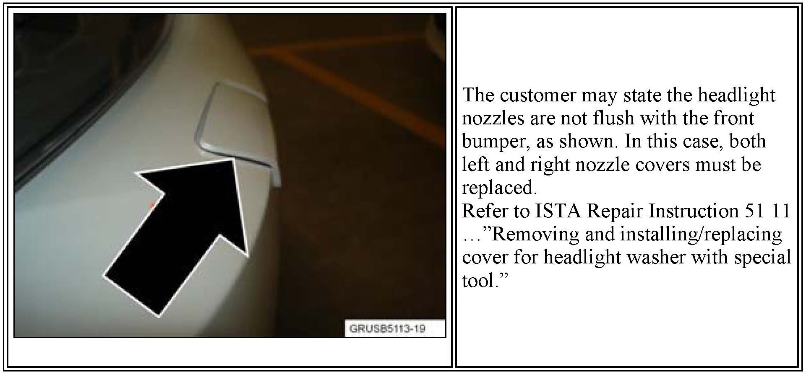
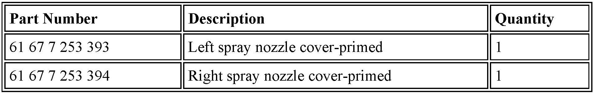
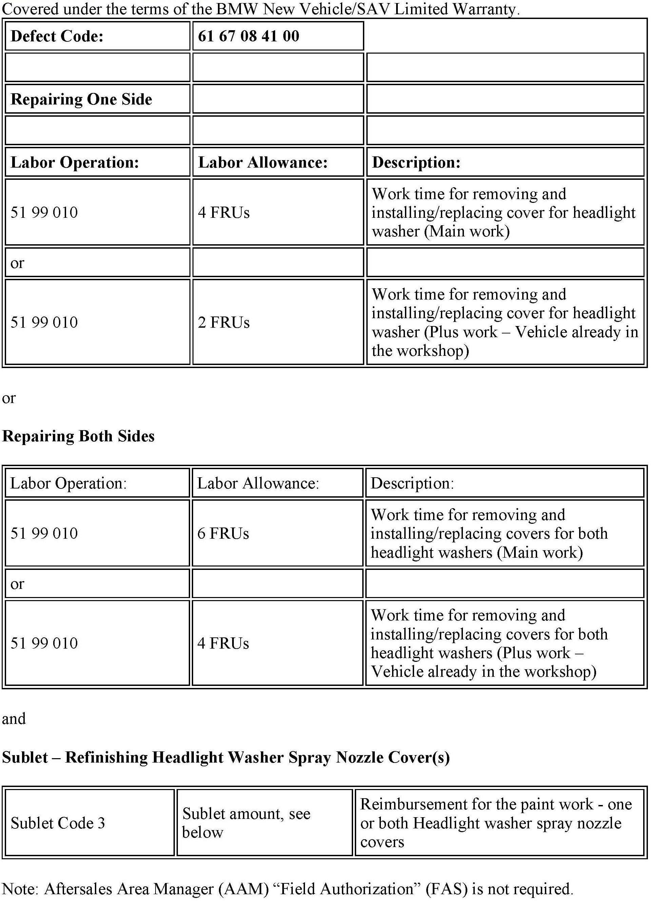

Lighting - Headlight Washer Nozzle Doesn't Fully Retract
SI B51 15 11Body Equipment
April 2013
Technical Service
This Service Information bulletin supersedes SI B51 15 11 dated July 2011.
[NEW] designates changes to this revision
SUBJECT
Headlight Washer Nozzle Cover Sticks Out
MODEL
[NEW] E92
[NEW] E93
[NEW] Produced from February 28, 2010
SITUATION
After using the headlight washer system, the telescoping headlight washer nozzle does not fully retract.
[NEW] CAUSE
The left and/or right headlight washer nozzle cover tilts in the bumper cut-out.

[NEW] PROCEDURE

PARTS INFORMATION

WARRANTY INFORMATION
Paint and Refinish Work
Invoice eligible paint and refinish sublet work on the repair order at the actual cost charged with no handling or markup. The sublet amount must also include any discounts or allowances.
Appropriate charges are determined by comparing them to the corresponding warranty rates. Prior to performing the repair, calculate your center's repair cost and then obtain outside repair estimate(s) for price comparison purposes.